Nuestro sitio web busca entretener e informar a entusiastas y a todos aquellos que quieran aumentar sus conocimientos en
la fotografía. Actualmente somos 4 redactores, ¡Nos encanta la fotografía, los lentes y los gadgets más locos del
mercado! ¡El mundillo nos apasiona tanto como a ti!
Tenemos el compromiso de traer una gran variedad de contenido
relacionado al medio, desde reseñas de cámaras o lentes, hasta accesorios que no pueden faltar en tu arsenal. Y no nos
olvidamos de los celulares, ¡Sabemos muy bien el potencial que tienen!

Nos enorgullece no solo brindar un servicio de calidad en el ámbito de la fotografía, sino también mantenernos actualizados con las últimas tendencias y avances tecnológicos.
Reconocemos que el mundo de la fotografía está en constante evolución, y entendemos la importancia de contar con información actualizada sobre los equipos y la tecnología disponibles en el mercado.
Nuestro equipo de expertos se esfuerza continuamente por estar al tanto de las novedades y las mejoras en los equipos fotográficos. Desde cámaras profesionales hasta smartphones con cámaras de alta resolución, nuestro objetivo es brindarte información detallada y precisa para ayudarte a tomar decisiones certeras sobre tus compras.
Realizamos rigurosas pruebas y revisiones de los productos líderes en el mercado para evaluar su rendimiento, calidad y funcionalidad. Nuestro equipo se sumerge en la experiencia de utilizar cada equipo y accesorio, explorando sus características, opciones de personalización y facilidad de uso. De esta manera, podemos afirmar que nuestras recomendaciones son confiables y basadas en pruebas concretas.
No importa si ya sos profesional o simplemente un aficionado, en Lens 4 Gear siempre encontrarás algo interesante y útil que te ayudará a mejorar.
Nuestro objetivo es crear un lugar donde la comunidad de la fotografía pueda descubrir y aprender.
Seguinos en nuestras redes para ver más de lo que tenemos para ofrecer